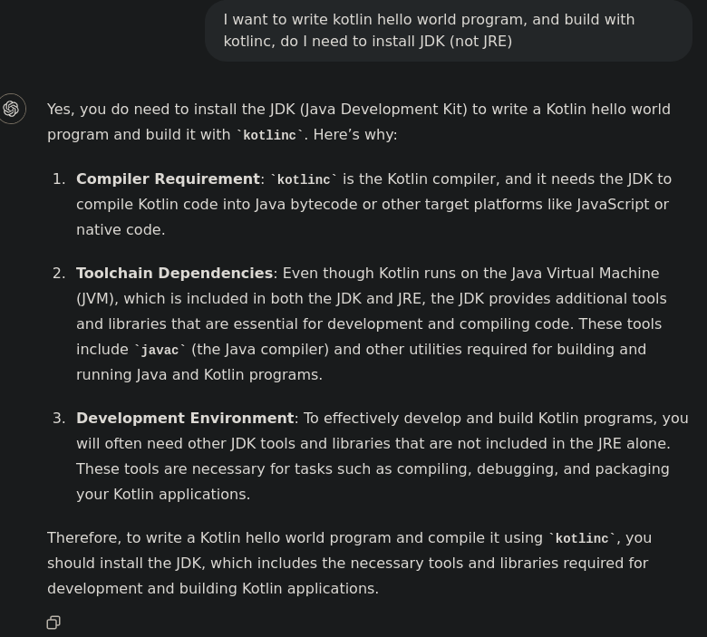
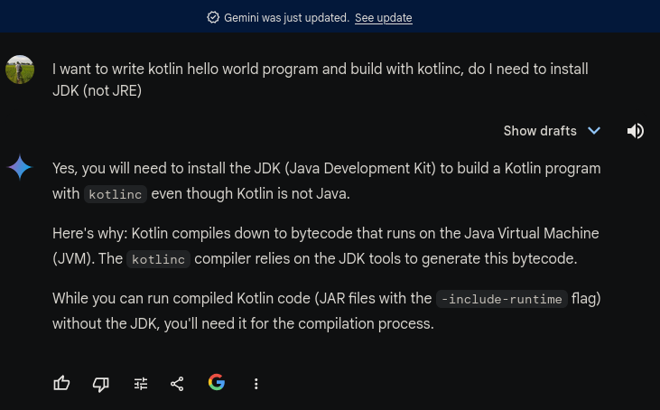

Hay "Một mình chống lại cả internet và AI (ChatGPT, Gemini)".
Internet thường hay sai, thậm chí nhiều khi sai nhưng nghe có vẻ đúng đúng, là nền tảng cho sự "ảo tưởng" của các AI chatbot bịa ra đủ thứ và nói rất hay.
build kotlin "Hello world" có cần JDK không?
Với câu hỏi "I want to write kotlin hello world program and build with kotlinc, do I need to install JDK (not JRE)", lên mạng internet tìm câu trả lời:
Ta tìm được StackOverFlow đầy uy tín (và nổi tiếng vì nhiều câu trả lời sai)
- SO https://stackoverflow.com/questions/48036758/is-the-jdk-required-for-kotlin
- Sololearn (học 1 mình?) https://www.sololearn.com/en/Discuss/2073812/why-does-kotlin-need-a-jdk-when-it-has-its-own-compiler
- Kotlin discuss https://discuss.kotlinlang.org/t/does-the-kotlin-compiler-require-a-jdk/2496
Thử hỏi ChatGPT

Và AI của Google: Gemini

Mọi câu trả lời đều là "có". Nhưng... bài trước Hello Kotlin 2024 hoàn toàn không thấy nhắc tới JDK, vậy có cần không?
JRE là gì
$ apt-cache search openjdk | grep -i jdk-17
openjdk-17-doc - OpenJDK Development Kit (JDK) documentation
openjdk-17-jdk - OpenJDK Development Kit (JDK)
openjdk-17-jdk-headless - OpenJDK Development Kit (JDK) (headless)
openjdk-17-jre - OpenJDK Java runtime, using Hotspot JIT
openjdk-17-jre-headless - OpenJDK Java runtime, using Hotspot JIT (headless)
openjdk-17-jre-zero - Alternative JVM for OpenJDK, using Zero
openjdk-17-source - OpenJDK Development Kit (JDK) source files
Java Runtime Environment (JRE) chứa máy ảo JVM, dùng để chạy các file .class, hay nói chung: để chạy các chương trình trên JVM. JRE tương ứng với chương trình câu lệnh java.
JDK là gì
Java Development Kit (JDK) chứa Java compiler và nhiều thành phần khác cần thiết để viết chương trình chạy trên JVM. JDK có chương trình câu lệnh javac, khi viết bất kì chương trình Java nào đều cần javac để compile thành .class.
Kotlin compiler
Kotlin sử dụng compiler để biến code Kotlin (file .kt) thành Java bytecode (file .class), rồi chạy code đó (interpret) trên máy ảo JVM.
Java và Kotlin là điển hình cho ngôn ngữ dùng cả "compiler" lẫn "interpreter".
Kotlin compiler https://kotlinlang.org/docs/command-line.html được đóng gói thành một file JAR, và người dùng thường nhìn thấy câu lệnh "kotlinc" (thực chất là 1 script).
Kotlinc
kotlinc là một script để gọi câu lệnh java với các option cần thiết:
$ cat $(command -v kotlinc)
#!/usr/bin/env bash
#
...
# Copyright 2011-2015, JetBrains
...
kotlin_app=("${KOTLIN_HOME}/lib/kotlin-preloader.jar" "org.jetbrains.kotlin.preloading.Preloader" "-cp" "${KOTLIN_HOME}/lib/kotlin-compiler.jar${additional_classpath}" $KOTLIN_COMPILER)
fi
"${JAVACMD:=java}" $JAVA_OPTS "${java_args[@]}" -cp "${kotlin_app[@]}" "${kotlin_args[@]}"
Có thể thấy file kotlin-compiler.jar được dùng ở script trên. Khi chạy kotlinc chỉ thấy gọi lệnh java, không thấy dùng javac (Java compiler).
Build chương trình Kotlin đơn giản dùng stdlib của Java
# main.kt
import java.math.BigInteger
fun pe16(): Int {
val p: BigInteger = 2.toBigInteger().pow(1000)
return p.toString()
.chars()
.map({ it - '0'.toInt() })
.sum()
}
fun main() {
println("tong cac chu so cua 2**1000 la ${pe16()}".toUpperCase())
}
Kết quả
$ kotlinc main.kt
$ kotlin MainKt
TONG CAC CHU SO CUA 2**1000 LA 1366
Hoàn toàn không thấy sử dụng javac trong quá trình này. Trên máy thậm chí không có câu lệnh javac tức không cài JDK.
$ javac
zsh: command not found: javac
$ dpkg -l | grep
ii openjdk-11-jre:amd64 11.0.23+9-1ubuntu1~22.04.1 amd64 OpenJDK Java runtime, using Hotspot JIT
ii openjdk-11-jre-headless:amd64 11.0.23+9-1ubuntu1~22.04.1 amd64 OpenJDK Java runtime, using Hotspot JIT (headless)
Kết luận
Build chương trình kotlin không cần JDK.
Sau khi lên kotlinlang Slack để kiểm tra lại câu trả lời, một người dùng Kotlin lâu năm đã cùng sửa lại internet với câu trả lời StackOverFlow https://stackoverflow.com/a/78750618/807703.
Kết luận
Thời buổi AI 4.0, nhớ giành thời gian tự suy nghĩ.
Hết.
HVN at http://pymi.vn and https://www.familug.org.